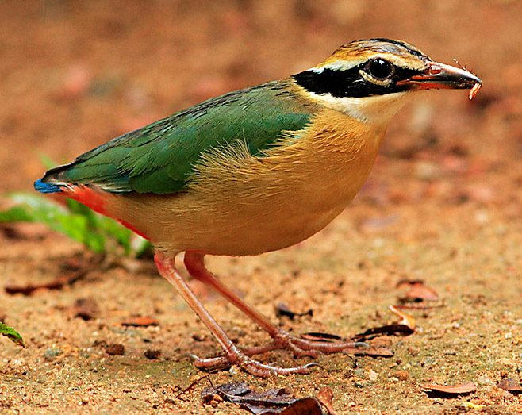

नवरंगIndian Pitta
Pitta brachyura · Pittidae · BRD-0149

- Scientific nameवैज्ञानिक नाम
- Pitta brachyura (Temminck, 1822)
- Familyकुल
- Pittidae
- Hindiहिंदी
- नवरंग
- Local namesस्थानीय नाम
- navrang, naurang, nawrang, pitta, indian pitta
- Status hereयहाँ की स्थिति
- native
- Movementआवागमन
- Summer visitor
- IUCNIUCN
- LC
- Reviewसमीक्षा
- audited and independently read
When to look कब देखें
Summer visitorग्रीष्मकालीन प्रवासी. Expected mainly in April, May, June, July, August, September.मुख्यतः अप्रैल, मई, जून, जुलाई, अगस्त, सितंबर में अपेक्षित।
Arrives in April–May from wintering grounds in southern India and Sri Lanka; departs by August–September. Ali & Ripley (1968) document spring arrival in northern and central India; specific timing varies by region. All migrants and visitors →
Uses and possibilities उपयोग और संभावनाएँ
Drawn from the documented uses in the profile below, where each is labelled traditional, current or a research lead. All uses →
नवरंग / Indian Pitta
Pitta brachyura (Temminck, 1822) — Pittidae
नवरंग — यह रंगीन गर्मियों की चिड़िया अप्रैल में पूर्वी उत्तर प्रदेश के जंगलों में आती है और अगस्त तक रहती है। इसका नाम "नवरंग" इसके नौ रंगों के कारण है - नीला, लाल, हरा, पीला, सफेद आदि। यह जमीन के पास छलांग लगाती है और कीड़े, गिरगिट और छोटे सांप खाती है। इसकी तेजी वाली चाल और रंगीन पंख इसे एक सुंदर चिड़िया बनाते हैं।
Quick Identification त्वरित पहचान
| Feature | Description |
|---|---|
| Size | Small to medium pitta; 19–22 cm long |
| Head | Blue crown; black face mask; buff eyebrow stripe |
| Back | Olive-green to dusky |
| Wings | Brilliant blue in flight |
| Underparts | Orange-red or buff |
| Tail | Short, dark with blue tip |
| Legs | Pinkish flesh-colour; long |
| Behaviour | Hops on ground; shy; often heard before seen |
| Call | Distinctive loud pee-ta whistle |
Field tip: In open forest and sal forest in summer, look for a plump ground-dwelling bird with blue crown and brilliant blue wings when in flight. It hops and walks on ground in forest clearings and leaf litter. Shy and cryptic. The loud pee-ta call is often the first indication of presence.
हिंदी — कैसे पहचानें:
छोटी, रंगीन चिड़िया।
नीले रंग का मुकुट और पंख।
जमीन पर छलांग लगाती है।
तेजी से "पी-ता" गान।
Morphology आकारिकी
Biometrics:
| Measurement | Range |
|---|---|
| Total length | 190–220 mm |
| Wing (flattened chord) | 95–110 mm |
| Tail | 55–65 mm |
| Bill | 20–24 mm |
| Tarsus | 27–31 mm |
| Weight | 45–55 g |
Size: 19–22 cm long; wingspan 22–25 cm. Weight 45–55 g. A small, robust, ground-dwelling bird.
Plumage: Crown and upper head glossy blue. Face black, with buff eyebrow stripe extending back. Mantle and back olive-green to dusky. Wings blue, particularly striking in flight. Rump and upper tail-coverts blue. Tail short, dark with blue tip. Throat buff or pale. Breast and underparts orange-red to rust-red. Belly buff to orange. Undertail-coverts orange-red.
Bill: Pointed, medium-length, dark. Slightly curved.
Legs and feet: Pinkish flesh-colour; relatively long for a ground bird.
Eyes: Dark.
Sexual dimorphism: Females slightly duller than males on head and wings.
Juveniles: Duller overall; less bright on wings; head coloration less distinct.
Vocalisations. Call repertoire:
- Song: The distinctive loud pee-ta or pee-pee-ta whistle, often given from ground or low perch.; very loud and penetrating.
- Call: Softer churring or grunting sounds.
- Contact calls: Soft peeps between pair members.
हिंदी: नर की तेजी वाली, साफ "पी-ता" गान सुबह और शाम अक्सर सुनाई देती है। कभी-कभी "पी-पी-ता" भी कहता है।
Behaviour & Ecology व्यवहार और पारिस्थितिकी
Ground gleaner: Indian Pitta feeds on the ground or close to it, searching leaf litter for prey. It feeds on:
- Insects and invertebrates (beetles, crickets, grasshoppers)
- Earthworms
- Small lizards
- Small snakes
- Small frogs occasionally
Feeding behaviour: Hops and walks on ground; probes leaf litter; picks up prey; often remains silent while feeding.
Social behaviour: Territorial pairs during breeding season; males are vocal and defend breeding territories. Solitary during migration.
Habitat preference: Open deciduous forest, sal forest, forest edge, cultivation margins with nearby forest. Prefers damp areas and areas with dense leaf litter.
Movement: Walks and hops; moves with rapid, bounding gait.
Shy behaviour: Very shy and skulking; remains hidden in vegetation. Often heard but not seen.
Predators: Snakes, monitor lizards, raptors, cats may take individuals.
हिंदी: अकेली रहती है। जमीन पर कीड़े खोजती है। पत्तियों के बीच छिपी रहती है। बहुत शर्मीली।
Life Cycle / Phenology जीवन चक्र
Summer visitor: Absent during winter months (October–March); returns to eastern UP from April and remains through August–September.
Arrival and departure: First birds arrive in late March–April; peak in May–June; departure begins in July–August, with most birds gone by September.
Breeding: Breeds in eastern UP. Nest is a burrow in earth bank or ground hollow. Clutch of 2–3 eggs; breeds April–June.
Moult: Complete moult occurs before departure to wintering grounds; partial pre-breeding moult on wintering grounds before arrival.
Roosts: Roosting in dense vegetation or low branches; solitary.
हिंदी: अप्रैल में आता है, अगस्त तक रहता है। यहीं घोंसला बनाता है। दक्षिण भारत में सर्दी बिताता है।
Host Plants or Prey आहार
| Food Type | Examples | Feeding Behaviour |
|---|---|---|
| Insects | Beetles, crickets, grasshoppers, ants | Pick from ground and leaf litter |
| Earthworms | Various earthworm species | Probe in moist ground |
| Small reptiles | Grass lizards, skinks, small snakes | Capture and kill |
| Small amphibians | Small frogs, toads | Occasional prey |
| Insect larvae | Various larvae in soil and litter | Probe and extract |
हिंदी: मुख्यतः जमीन के कीड़े खाता है। केंचुए भी खोजता है। कभी-कभी छोटी छिपकलियाँ भी मार कर खाता है।
Predators / Natural Enemies शत्रु
- Reptilian predators: Snakes, monitor lizards
- Avian predators: Raptors, crows, snakes
- Mammalian predators: Domestic cat, occasionally mongoose, jackals
- Parasites: Blood parasites, internal helminths
हिंदी: साँप और छिपकली का खतरा है। बड़ी बाजें भी शिकार करती हैं। बिल्ली भी खतरनाक है।
Agricultural / Human Relevance कृषि प्रासंगिकता
Protected species: All wild birds in India are protected under the Wildlife (Protection) Act 1972 (Schedule IV, amended 2022). Hunting is prohibited.
Pest control: Consumes large numbers of insects, grasshoppers, crickets, and earthworms, providing natural pest control benefit in agriculture and gardens.
Cultural relevance: The name "नवरंग" (nine colors) reflects its striking appearance. Featured in classical Sanskrit and Hindi literature as a beautiful and colorful bird.
Scientific value: Breeding bird monitoring important for understanding forest habitat quality and breeding season ecology; migration patterns indicate seasonal movements.
हिंदी: वन्यजीव संरक्षण अधिनियम 1972 के अनुसूची IV के अंतर्गत पूरी तरह संरक्षित है। इसका शिकार निषिद्ध है।
Expected Locally स्थानीय रूप से अपेक्षित
Not a field record. Written from published accounts for eastern Uttar Pradesh. No confirmed local sighting yet — if you have seen it, that is what the atlas needs.
अभी तक स्थानीय पुष्टि नहीं। यह विवरण प्रकाशित स्रोतों से है, किसी अवलोकन से नहीं।
Summer range: Expected in eastern Uttar Pradesh from April to August, particularly in open deciduous and sal forest areas of Basti and Ayodhya districts. Published handbooks document this species as a breeding summer visitor across northern central India.
Habitat preference: Open deciduous forest, sal forest, forest edge with nearby cultivation. Prefers areas with dense leaf litter and ground cover.
Peak occurrence: May–June during breeding season.
Nearest published record: Handbook of the Birds of India documents this species as breeding in suitable forest habitats across northern and central India. Breeding records from adjacent regions confirm presence.
What a first record would be: A dated photograph or sound recording showing the bird clearly in a specific location (with GPS coordinates and date), such as the bird on the ground or the distinctive pee-ta call, submitted through the About page.
हिंदी: यह पक्षी स्थानीय रूप से अपेक्षित है, न कि देखे गए बतौर प्रेक्षण। अप्रैल से अगस्त तक जंगलों के किनारों में देखे जाने चाहिए। पहला रिकॉर्ड के लिए स्पष्ट फोटोग्राफ या तेजी वाली "पी-ता" गान की रिकॉर्डिंग चाहिए।
Distribution वितरण
Global range: Breeding range across much of the Indian subcontinent. Winters primarily in peninsular India and Sri Lanka. Very restricted range compared to winter visitors.
In India: Breeds in peninsular and northern India; many birds winter in southern India and Sri Lanka.
In Uttar Pradesh: Breeds in suitable forest habitat throughout the state, particularly in eastern districts.
In Basti district / eastern UP: Expected breeding visitor in open deciduous and sal forest areas; range grounds based on suitable habitat rather than confirmed in local surveys.
Research Questions शोध प्रश्न
- What is the population size of Indian Pitta breeding in eastern UP, and is it stable or changing over time?
- How does forest fragmentation and habitat loss affect breeding success and site fidelity of Indian Pitta?
- What are the specific wintering grounds of Indian Pitta populations that breed in eastern UP? Do all birds migrate or do some remain year-round?
- क्या जंगलों में पत्तियों के आवरण में बदलाव इस चिड़िया के शिकार को प्रभावित करता है?
- How do territorial males maintain and defend breeding territories, and what role does the loud pee-ta call play? (A child can track calling birds and map their territories during May–June.)
- क्या कीटनाशकों के उपयोग से इस चिड़िया के शिकार (कीड़े और गिरगिट) में बदलाव हुआ है?
Similar Species मिलती-जुलती प्रजातियाँ
| Species | Key Difference | Hindi | Field Rule |
|---|---|---|---|
| Green-breasted Pitta (Pitta reichenowi) | Larger; green on throat and breast; longer tail | हरे-स्तन वार्बलर | Green-breasted shows green underparts; Indian Pitta has rust-red underparts. |
| Banded Pitta (Pitta guajana) | Larger; black chest band; different coloration | बैंडेड पिता | Banded Pitta shows distinct black chest band; Indian lacks this. |
Field rule: Indian Pitta has a blue crown, orange-red underparts, and brilliant blue wings. If the bird shows green on breast and throat, it is a different species. If it shows a black chest band, it is likely Banded Pitta (rare in eastern UP).
Taxonomy & Classification वर्गीकरण
Original description. The species was described by Coenraad Jacob Temminck in 1822 based on Indian specimens.
Subspecies. The nominate subspecies P. b. brachyura breeds in the Indian subcontinent.
Family and order placement. Order Passeriformes; family Pittidae (pittas). The genus Pitta contains the pittas, mostly Asian ground-dwelling birds.
Phylogenetic notes. Molecular work has placed pittas as basal passerines, distinct from other songbird groups.
IUCN status rationale. Assessed as Least Concern (LC) globally. Populations are stable in suitable habitats. The species persists in fragmented forest habitats, though habitat loss is a concern. In India, it is protected under the Wildlife (Protection) Act 1972 (Schedule IV).
हिंदी: यह मुख्य रूप से भारत में पाया जाता है। पूरी तरह सुरक्षित है। जंगलों की सुरक्षा इसके लिए जरूरी है।
Photo Gallery फोटो गैलरी
No photos yet — add field photos to media/species/indian_pitta/ and run node scripts/sync_photos.js.
Wanted photos:
- Bird on ground showing blue crown and orange underparts
- In flight showing brilliant blue wings
- Hopping in leaf litter
- Head close-up showing facial pattern
- In typical forest habitat
- Singing (territorial display)
References संदर्भ
- Temminck, C. J. (1822). Manuel d'Ornithologie. Vol. 1, p. 283.
- Ali, S. & Ripley, S. D. (1970). Handbook of the Birds of India and Pakistan. Vol. 4 (Frogmouths to Pittas). Oxford University Press, Delhi. Pp. 63–66.
- Cramp, S. (Ed.). (1985). Handbook of the Birds of Europe, the Middle East and North Africa: The Birds of the Western Palearctic. Vol. 4 (Terns to Woodpeckers). Oxford University Press. Pp. 287–290.
- Grimmett, R., Inskipp, C. & Inskipp, T. (2011). Birds of the Indian Subcontinent (2nd edn). Oxford University Press, Delhi. P. 316.
- GBIF Occurrence Data — Pitta brachyura, India.
- IUCN Red List (2023). Pitta brachyura — BirdLife International assessment. IUCN, Cambridge. Status: Least Concern.
Source file: species/fauna/birds/indian_pitta.md